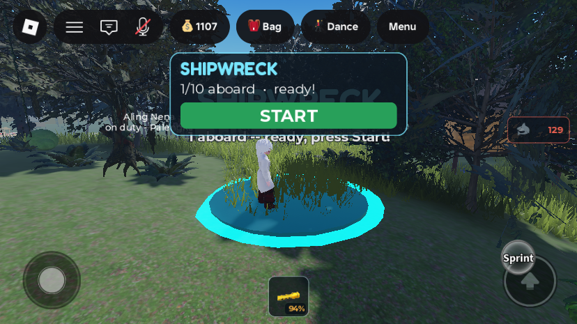
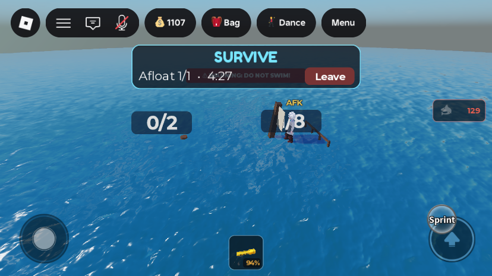
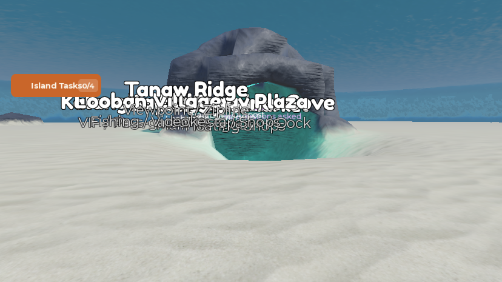
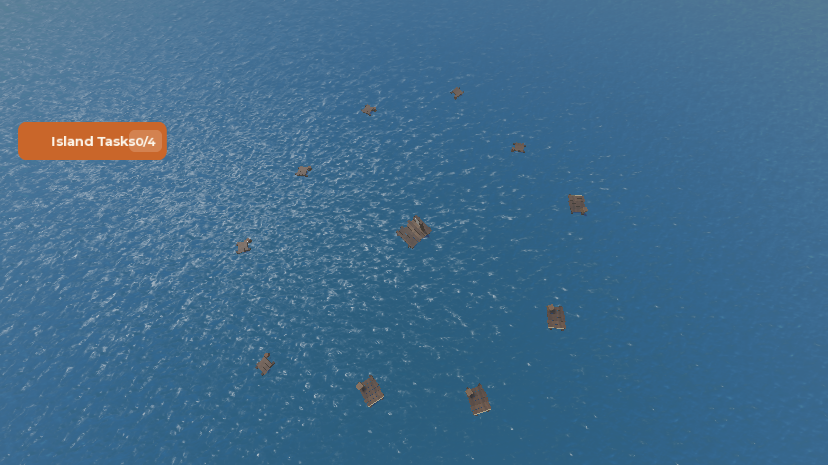
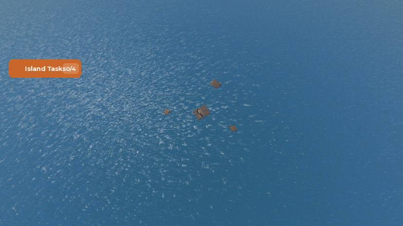
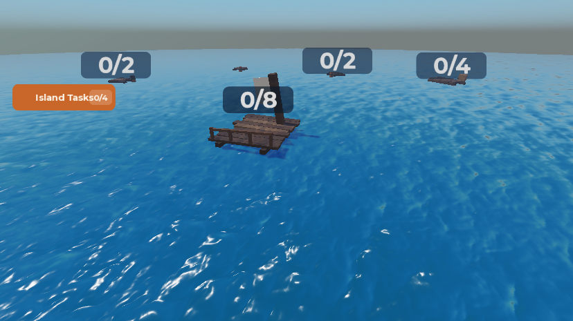
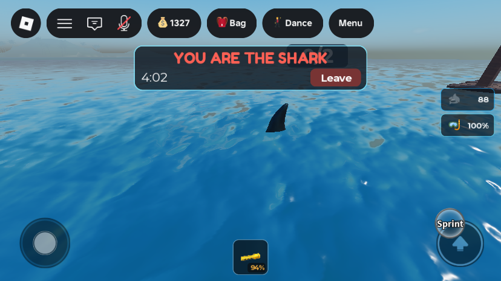
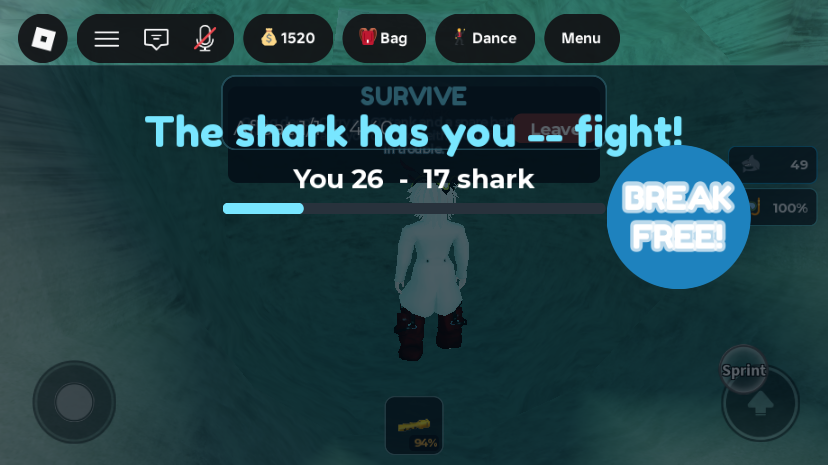
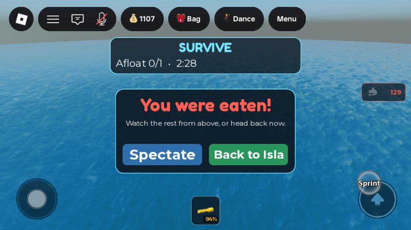
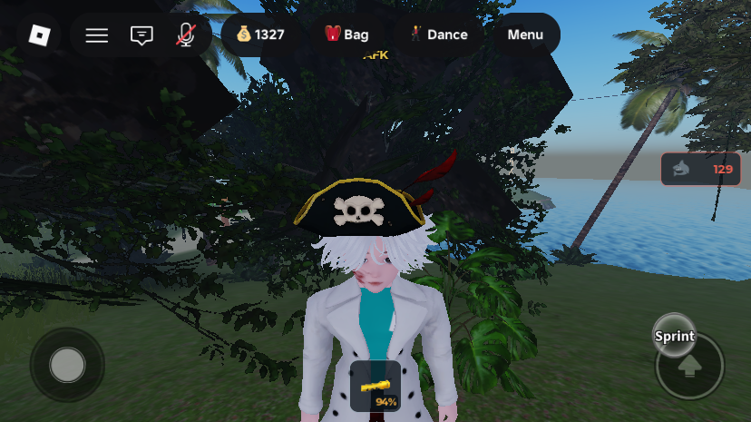

Shipwreck: a sink-or-swim minigame with a player shark
What was asked
A minigame called Shipwreck. Players stand in a circle to join, and once enough have joined they are brought to a separate room. There they find themselves on floating shipwreck planks in the middle of the sea. The planks sink little by little, some hold only 1–2 people, and a shark takes anyone caught in the water. The last one left wins a special item to take back to Isla Marahuyo. The details were settled in a question-by-question session with the owner:
- Joining: a circle near LoobanDock, 3 to 10 players. Once 3 are in, anyone can press Start for a 15–30 s countdown (20 s is used). Reaching 10 starts at once.
- Where: the same server, not a teleport to another place. This avoids the DataStore session-lock risk, and nothing in this game uses
TeleportServiceanyway. - The shark is a player, picked at random from those who joined, shown with the game's existing
SharkAssets.SharkMesh. Its goal is to eat everyone. It cannot climb onto planks. - Planks: players + 1 of them, sized to the group. All of them sink all the time, and the more people on one, the faster it sinks. Eventually every plank is gone and the shark decides the ending in open water.
- A bite drags both players to a small cave on the seabed for a 4-second mash contest. The shark's button stays in one place; the victim's jumps somewhere random after each tap. More taps wins. A winning victim gets 10 s of immunity and swims back to a plank on their own. A losing victim is dragged in and eaten. Everyone else hears it happen.
- Eliminated players choose between spectating until the end and going straight back to the island.
- Rewards: cosmetic first, a catalog pirate/crown hat. The consolation for losers was left to me to decide.
- The island's ambient AI sharks are kept away from the arena.
Changes from the approved plan (and why)
- Arena water is Terrain, at sea level, past the edge of the ocean. The plan had a
Partof Water material floating at Y=350. In Roblox only Terrain water can be swum in, and every water check here (BreathService,SharkService) raycasts Terrain only. The real ocean is a 32-stud water slab that ends at Z≈−800 with void beyond. So the arena is its own Terrain pool at (0, 0, −1700), about 900 studs past that edge. Nobody can boat or swim over, and it sits outsideSharkService'sMAP_BOUNDS(±1200), so ambient sharks never pick roam points there. - The shark is the player's own character, hidden, with the shark mesh welded on. It is not a separate server-driven model fed by an input remote.
SprintScriptforces every swimmer's WalkSpeed to 16 each frame, and a server-moved model would have added input lag to the shark's camera. This way the shark uses native swimming and the normal camera, and needs only a one-line speed exception. SharkServiceedit is an attribute check, not a bounds box. The arena is already outside the roam area, so the only edit is "never target a player withShipwreckInArena", as a safety net.- Fewer files. Lobby, shark and match loop are one module,
ShipwreckService, instead of the planned separate lobby and shark services. There is one client script instead of three. The shark needs no controller of its own (native movement), and spectating uses the normal camera. - Spectating follows the players still in the match (< / > buttons) instead of a free-fly camera. It works the same on phones, where the place is mostly played.
- No tools in the arena (the plan kept gear). An axe hit is reported to the pulis as a scene, and
PoliceUnitwould send an officer walking toward a spot past the edge of the map. - Not in the plan, but needed: no air drain in the arena (
BreathService); Wanted players cannot join (it would be a way to escape the police); a 5-minute match limit (survivors still afloat win); a losing shark is paid per catch; a match ends if everyone has left it. - Planks were built by hand from Parts, not with
generate_procedural_model, to get flat walkable tops and control over the size.
1. The join circle at Looban

LoobanDockitself is buried about 10 studs under the grass at (430, 12.2, −40); the terrain has been reshaped over it. The circle is on the ground above it at (430, 22.2, −40), between the LoobanVillage zone and the Ferry's mainland landing. The shore is about 80–100 studs east.- Joining uses the same approach as every other area check in this game: a flat radius check (
JOIN_RADIUS = 9.5), polled every 0.25 s. There is no Touched trigger. Walking out before the countdown ends leaves the queue without penalty. AnyoneJailed,Reviving,Wantedor carrying a patient is not counted. - The sign above the circle shows the state: "Stand in the circle to join (3-10 players)" / "2 aboard -- need 3 to start" / "Setting sail in 12s -- 4/10 aboard" / "Match at sea -- 3 still afloat".
- The lobby panel (top of the screen) shows the count and a START button once the minimum is met. The countdown is cancelled if the group drops below 3, and the match starts at once when 10 are in the circle. Only one match runs per server; people waiting in the circle see "A match is at sea -- you're next in line".
- Players are moved with a
HumanoidRootPart.CFrameset afterPlayer:RequestStreamAroundAsync(the place hasStreamingEnabled). They come back to a random spot 15 studs outside the ring, so they don't queue again by accident.
2. The arena


- Terrain: a water cylinder of radius 360, from Y −40 to 0, centred at (0, 0, −1700). Sand seabed (Y −48..−40) under radius 175 only; beyond that it has no floor, like the open ocean. There are 14 small rock and basalt mounds on the seabed.
- Grotto: a hollow slate dome (outer radius 16, inner 11) at (0, −38, −1625), filled with water, its mouth facing the centre. Filling Water into solid rock did not carve it; it had to be cleared with Air first, then flooded.
Workspace.IslaMarahuyo.Activities.ShipwreckArena:Walls(48 invisible parts forming a ring of radius 150, from Y −50 to +50),Grotto(markersSeatShark,SeatVictim,Mouth, andGlowwith a tealPointLight),SpectatorHold(90 studs above the centre),SharkStart,Center, andLive(the planks of the running match).
3. The planks



- Prefabs in
ServerStorage.ShipwreckAssets.PlankPrefabs:Small6×6, capacity 2, buoyancy 1.0 (with a barrel);Medium10×8, capacity 4, buoyancy 1.3 (crate, rope);Large14×12, capacity 8, buoyancy 1.7 (mast, sail, railing). Each has an invisibleFootprintPrimaryPart that players stand on and that the occupancy raycast hits. Decks, beams and props are non-colliding decoration.ModelStreamingMode = Atomic. - Layout (
ShipwreckArenaService.Build): players + 1 planks. The Large is always at the centre; of the rest, 40% are Medium and the others Small (at least one Small). They sit on a ring of radius18 + 6 × players, spread evenly, with ±15% angle and ±20% radius jitter from a per-match seed. If a pair ends up closer than their size plus 8 studs, the second one loses its jitter. - Sinking, every frame:
(0.04 + 0.03 × players on it + 0.15 × players above capacity) / buoyancystuds per second. Decks start 1.8 studs above the water. A plank stops holding anyone once it has dropped 4.5 studs (deck about 2.7 under), and it is destroyed at 12. An empty Small lasts about 110 s (dry for about 45 s); two players on a Small, about 45 s. There is no floor on this; every plank goes. - Survivors start spread over every plank except the last one, which starts empty.
4. The player shark

- At the start the chosen player's parts and face go transparent, and their name, title and medal tags are switched off (re-hidden every 0.5 s, because those services can rebuild them).
SharkMeshis cloned, scaled to 12 studs, namedShipwreckShark, taggedShipwreckShark, andWelded 0.5 studs below the root (massless, no collision). The snout points along the root's LookVector. - Cannot climb onto planks: the shark's parts go into collision group
ShipwreckShark, which does not collide withShipwreckPlank, the group every plank footprint is in. It passes under planks and falls through if placed on one. - Speed: player attribute
SwimSpeedOverride = 26, whichSprintScriptnow uses in water instead of 16. Measured swimming speed is about 16–17 studs/s for the shark, so swimming runs at about 0.65× WalkSpeed; survivors should be about 10.5. - Animation: every client bends the mesh's own bones (
body_0..3side to side, faster when it moves fast) and opens the jaw (ago_0) when the mesh gets aChompAtattribute. - The shark cannot bite during the first 5 s (
SHARK_RELEASE_DELAY).
5. The bite and the tap race

- Who can be bitten (checked every frame): a survivor who is not on a plank, is inside the water (the same double raycast as
BreathService), has been off a plank for at leastSPLASH_GRACE = 1s, is not immune, and is withinBITE_RANGE = 7of the shark. The shark must also be off cooldown: 3 s after a catch, 4 s after losing a race. Bites are automatic on contact; there is no button. - Drag: both roots are anchored and moved from the bite spot to the grotto mouth, then to the two seats facing each other, over 1.5 s. Everyone else in the match gets a red flash, the shark sting sound, a splash, and "name is being dragged under!".
- Race (
ShipwreckMashService): 1.2 s "Get ready", then 4 s. The server keeps the clock (GetServerTimeNow) and the score. A tap counts only inside the window and no faster than one per 0.05 s. The live score is pushed every 0.15 s, for display only. A tie goes to the shark. - Victim wins: both are let go in the grotto. The victim gets 10 s of immunity (
ShipwreckImmuneUntil, shown in the HUD) and swims up on their own. - Shark wins: the jaw snaps, and the victim is pulled into the mouth, hidden and eliminated.
- If either player leaves mid-race, the race is cancelled and the other is let go.
6. Out, spectating, and winning

- An eaten player's hidden body is parked, anchored, at
SpectatorHold. Spectate points the camera at the players still in (< / > to switch, "Back" to leave). Back to Isla sends them home at once; they are still paid at the end. - A survivor can also press Leave during the match (not during a race). For the shark, that forfeits.
- Wins: one survivor left → they win. No survivors left → the shark wins. The shark gone (left, died or reset) → every survivor still afloat wins. The 5-minute limit ends → every survivor still afloat wins. Dying or resetting in the arena counts as out; the new body spawns on the island as usual.
- The results screen stays up for 6 s ("YOU WON! Barnacle Hat + 220 Peso" / "+48 Peso for taking part"). Then everyone still in the arena is sent home and the planks are removed.
7. Rewards

- Winner:
profile.Cosmetics.HatShipwreckCrown+1 (created the first time, the same lazy set-up the Bilao Box uses), worn at once, plusWINNER_SHELLS = 100throughCurrencyService.AddShells(..., true, "Shipwreck_Win"). The VIP and Fiesta multipliers apply, so the test account received 220. The results screen shows what actually landed, not the base amount. - Everyone else (
"Shipwreck_Survival"): survivors getmin(120, 10 + 0.5 per second survived); a losing shark getsmin(120, 10 + 15 per catch). - The hat (
ServerStorage.ShipwreckAssets.Cosmetics.HatShipwreckCrown) is an Accessory built from Creator Store asset 144593544 ("Captain Barnacle Bones's Pirate Hat"). Only its mesh was kept; the asset's "HatHelperGuideGiverScript" was dropped. It has aHatAttachmentat (0, −0.35, 0.1). - New
CosmeticEquipService: until nowprofile.Cosmeticswas only a tally; nothing ever appeared on a character. This service puts owned cosmetics listed in itsWEARABLEtable on afterCharacterAppearanceLoaded(waiting for the profile). Only the hat is listed. The Bilao Box cosmetics (HatSalakot,GlowingTrail, ...) still show nothing; adding them is separate work.
8. Other systems touched
BreathService: no air drain or refill for players withShipwreckInArena. The finale is all swimming, and drowning would hand them to the Health Post revive and scatter their bag. Their air stays where it was when they entered.SharkService: a player withShipwreckInArenacounts ascaveSafe, so ambient sharks never target them.SprintScript: in water,WalkSpeed = SwimSpeedOverride or 16.CurrencyService:Shipwreck_Win("Won Shipwreck") andShipwreck_Survival("Shipwreck: stayed afloat") added toLEDGER_LABELSandTRANSACTION_TYPE_BY_SOURCE(Gameplay).- The island's
SharkAlertGuiis switched off on the client during a match and restored afterwards.
All changes
| Path | What | |
|---|---|---|
| new | ReplicatedStorage.ShipwreckConfig | every tunable (below) |
| new | ServerScriptService.ShipwreckService | lobby, countdown, state, shark body, match loop, bite gate, eliminations, return home, Studio debug hooks |
| new | ServerScriptService.ShipwreckArenaService | plank layout, sinking, occupancy |
| new | ServerScriptService.ShipwreckMashService | drag to the grotto, tap race, eating |
| new | ServerScriptService.ShipwreckRewardService | payouts |
| new | ServerScriptService.CosmeticEquipService | wears owned cosmetics |
| new | ServerScriptService.ShipwreckBootstrap (Script) | Init for the two services above |
| new | StarterPlayer.StarterPlayerScripts.ShipwreckClient | all UI, spectate camera, shark bone animation |
| edited | ServerScriptService.BreathService | heartbeat skips ShipwreckInArena |
| edited | ServerScriptService.SharkService | caveSafe includes ShipwreckInArena |
| edited | StarterPlayer.StarterPlayerScripts.SprintScript | SwimSpeedOverride |
| edited | ServerScriptService.CurrencyService | two ledger sources |
| new | Workspace.IslaMarahuyo.Activities.Shipwreck | JoinCircle, JoinCircleInner, JoinSign (BillboardGui Board: Title, Status) |
| new | Workspace.IslaMarahuyo.Activities.ShipwreckArena | Walls, Grotto, SpectatorHold, SharkStart, Center, Live |
| new | ServerStorage.ShipwreckAssets | PlankPrefabs.{Small,Medium,Large}, Cosmetics.HatShipwreckCrown |
| new | Terrain | the pool, seabed, grotto and rocks around (0, −20, −1700); nothing was there before |
Remotes (created by ShipwreckService in ReplicatedStorage.Remotes): ShipwreckStatus (server→client: lobby, match, survivors, biteAlert, mash, immune, eliminated, result, ended) and RequestShipwreck (client→server: start, tap, spectate, leave).
Player attributes (in memory only, never saved): ShipwreckState (inMatch / eliminated / spectating), ShipwreckRole (shark / survivor), ShipwreckInArena, ShipwreckImmuneUntil (server time), SwimSpeedOverride. Mesh attribute ChompAt. Collision groups ShipwreckShark and ShipwreckPlank. Profile field Cosmetics.HatShipwreckCrown.
Tunables (ShipwreckConfig): MIN_PLAYERS 3, MAX_PLAYERS 10, COUNTDOWN_SECONDS 20, JOIN_RADIUS 9.5, RETURN_RING 15, ARENA_CENTER (0,0,−1700), PLAY_RADIUS 150, BASE_RADIUS 18, RADIUS_PER_PLAYER 6, MEDIUM_SHARE 0.4, SWIM_GAP 8, PLANK_TOP_Y 1.8, SINK_BASE 0.04, SINK_PER_PLAYER 0.03, SINK_OVERLOAD 0.15, SUNK_COLLISION_DROP 4.5, SUNK_DESTROY_DROP 12, SHARK_SWIM_SPEED 26, SHARK_LENGTH 12, SHARK_RELEASE_DELAY 5, BITE_RANGE 7, BITE_COOLDOWN 3, BITE_COOLDOWN_AFTER_LOSS 4, SPLASH_GRACE 1, DRAG_SECONDS 1.5, MASH_READY_SECONDS 1.2, MASH_SECONDS 4, MIN_TAP_INTERVAL 0.05, VICTIM_WIN_IMMUNITY 10, EAT_SECONDS 1.2, MATCH_TIME_LIMIT 300, RESULT_SECONDS 6, WINNER_SHELLS 100, SURVIVAL_BASE 10, SURVIVAL_PER_SECOND 0.5, SURVIVAL_CAP 120, SHARK_PER_CATCH 15.
Studio-only test hooks (created only when RunService:IsStudio()): ServerStorage.DebugShipwreckSoloMode:Fire(true) (1 player is enough), DebugShipwreckForceStart:Fire(), DebugShipwreckSetShark:Fire(player | false | nil), DebugShipwreckForceSink:Fire(index, studsPerSec), DebugShipwreckTriggerBite:Fire(player, botTapsPerSec) (a race against a bot), DebugShipwreckEndMatch:Fire(winner | nil). With fewer than 2 players, or no shark, a match runs in test mode and never ends on its own, except by time, or when everyone has left.
How it was tested
Four solo playtests on the iPhone 6 Plus emulation, each ended by kicking the player from the Server datamodel. Every new and edited script passed a loadstring compile check first, and the startup log shows "[ShipwreckService] circle open at Looban -- 3-10 players" with no errors.
- Lobby: standing in the ring → sign "1 aboard -- ready, press Start!", panel "1/10 aboard · ready!". Start → "Setting sail in 19s" and the button hides.
- Start: 1 player → 2 planks, the player on the Large at (0, 4.9, −1700), attributes set, sign "Match at sea -- 1 still afloat".
- Sinking: the plank was forced down under the player → they were swimming, and island air stayed at 90 (the exemption works). The plank was removed once gone.
- Shark:
role=shark, head transparency 1, groupShipwreckShark, client WalkSpeed 26, swimming about 16–17 studs/s. Placed on the Large plank, it fell through into the water (root at −0.55, below the deck at 0.22). - Tap race: as the shark against a bot at 6 taps/s: 41 taps sent, 34 counted, 24–34 → "Gulp! One less swimmer." As the victim: 38 taps from 745.41 to 749.53 (server clock) against a window of 745.35–749.35 → victim won, with 7 s of immunity left when checked, and no other requests in the server log. Not tapping at all → eaten → moved to
SpectatorHold(Y 90) → "You were eaten!" panel. - Spectate → Back: state
spectating, bar "Nobody left afloat" (solo). Back → home 15 studs from the ring, unanchored, no Shipwreck attributes left, planks removed, the match ended as "empty", no results screen popped up on the island. - Win:
DebugShipwreckEndMatchwith the player → the hat on at once (attached byAccessoryRigidConstraint), ledger "Won Shipwreck +220", results screen, then home after 6 s. - Plank layouts for 3 and 10 players were built in Edit with a copy of the module, photographed, and cleared.
- Fixed during testing: decks started too low and were awash in about 20 s (raised to 1.8, sink window retuned); the reward text read "Barnacle Hat + +100 Peso" and showed the base amount, not the 220 actually paid; the lobby panel sat mid-screen on a phone (moved to the top); the island's "DO NOT SWIM" banner showed under the HUD; the HUD kept saying "SURVIVE" after elimination; a match stayed open with nobody in it; the tap button looked live during the drag.
Not verified / known gaps
- No real multiplayer match yet. Every bite in testing came from the debug hook against a bot. The automatic bite (range, 1 s grace, in-water test, immunity) never fired between two real players. Nobody else saw the bite alert, and spectating was never pointed at another player. This needs at least 3 accounts, or a published test server.
- Getting out of the water onto a plank (deck 1.8 above the water, and
WaterMovementService's jump rules) was not tried. - The tail sway was seen once on a posed mesh in Edit. The jaw chomp and the "pulled into the mouth" eat were not checked by eye.
- Not exercised: the countdown cancelling below 3; the early start at 10; the 5-minute limit; the shark leaving mid-match; a player dying in the arena.
- The hat's position was checked on one R15 avatar only. It is always worn; there is no way to take it off yet.
- The results-screen fixes (actual amount paid, no doubled "+") were made after the last match that ended with a win; no match has shown the new text yet.
- A Wanted player standing in the circle is ignored silently, with no message saying why.
- The balance (sink rates, 26 vs 16 speed, 7-stud bite, 42–60 stud gaps at 10 players) is first-pass. Watch real matches for length and fairness.
- Unexplained input in one run: during one test, "spectate" and then "leave" reached the server without my scripts sending them, and an earlier playtest stopped on its own. It could not be reproduced; with the request log on, only my taps arrived.
Test values to revert: nothing is left in the place (Lighting.ClockTime was set to 14 in Edit for the layout shots and put back to 0; solo mode and the forced shark exist only while a playtest runs). The test account MERS_Cov2 kept real rewards from testing: +413 Peso (Won Shipwreck 220, and stayed afloat 55, 48 and 90) and Cosmetics.HatShipwreckCrown = 1. They have not been removed.